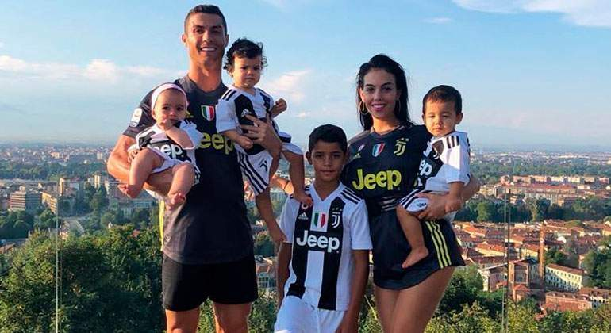

Cristiano Ronaldo habla portugués, inglés y español,259260 mientras que debe su nombre a la admiración de sus padres al actor y posteriormente presidente de los Estados Unidos Ronald Reagan.261 Su padre, Jose Dinis Aveiro, murió por una crisis renal a causa del alcohol el 7 de septiembre de 2005,262 cuando Cristiano tenía veinte años y se encontraba concentrado con la selección. Horas después, se reunió con el entrenador del conjunto portugués para comunicarle su intención de jugar el partido contra Rusia para la clasificación al Mundial de Fútbol de 2006. Pasado el compromiso, el técnico de su club de entonces, Alex Ferguson, le permitió regresar a su ciudad natal para el entierro por lo que se perdió el partido contra el Manchester City, uno de los raras ocasiones en las que se ha perdido un encuentro por motivos extra-deportivos. Después de dos partidos para la calificación a la Copa Mundial de Fútbol viajó a Indonesia para recaudar fondos por el tsunami del océano Índico de 2004. Se reunió con el vicepresidente Jusuf Kalla y el presidente de Timor Oriental, Xanana Gusmão para dar una contribución de 120.000 dólares. A lo largo de toda su carrera acciones del género estuvieron muy ligadas a su vida, siendo muy activo y contribuyente en la causa social y en favor de la salud y el desarrollo. Subastó la Bota de Oro lograda en 2011 para recaudar fondos para los niños de Gaza, en Palestina después de que la Franja de Gaza fuera bombardeada duramente por las tropas israelíes,263 mientras que a través de numerosas asociaciones y con donativos, por citar otros ejemplos, el portugués ayuda en la medida permitida por su agenda. No en vano, en su infancia superó una operación del corazón que estuvo a punto de ser fatídica, siendo también uno de los motivos de sus acciones y de su religiosidad católica, que también profesa.264 El 4 de julio de 2010, pocos días después de la derrota del equipo de Portugal en la Copa Mundial de Fútbol de 2010, anunció por redes sociales que era padre de un niño, Cristiano Jr, que nació en es estado de California en los Estados Unidos. Se acordó con la madre que su identidad se mantendría en secreto y el niño quedaría bajo su tutela.265266 Posteriormente, siguió un proceso similar con un embarazo subrogado en 2017 mediante el cual fue de nuevo padre, esta vez de mellizos, Eva y Mateo.267 Entre medias, mantuvo una relación con la modelo rusa Irina Shayk hasta inicios de 2015268 y, tras pasar una época sin relación estable conocida, al menos a la opinión pública, inició una relación con la española Georgina Rodríguez en el verano de 2016. Rodríguez y Ronaldo se vieron juntos en público por la primera vez en noviembre de 2016, cuando fueron a Disneyland Paris.269 Tan solo cinco meses después del nacimiento de los mellizos, su novia Georgina dio a luz el 12 de noviembre de 2017 al cuarto hijo del futbolista, Alana Martina.
